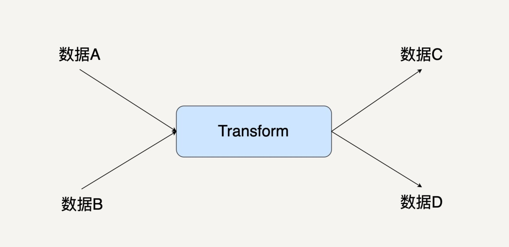
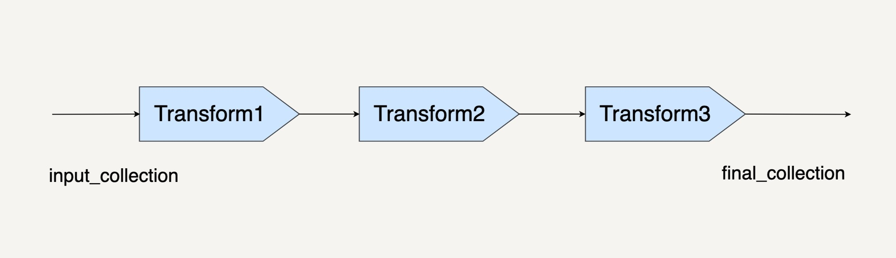
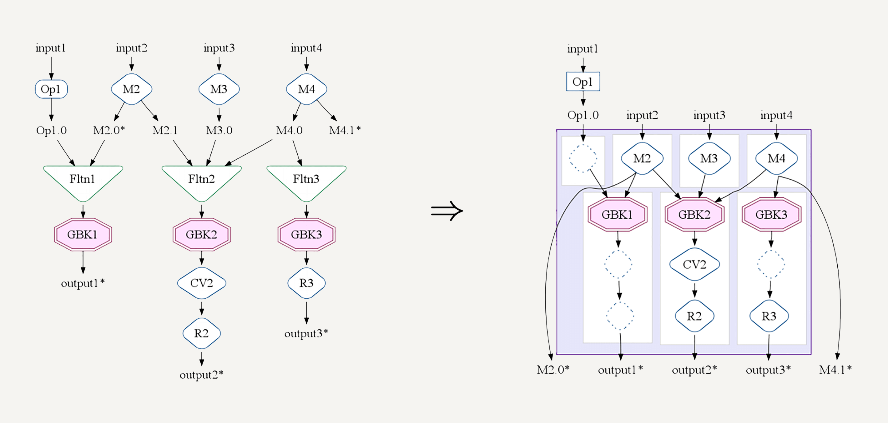

- 00 开篇词 从这里开始，带你走上硅谷一线系统架构师之路.md
- 01 为什么MapReduce会被硅谷一线公司淘汰？.md
- 02 MapReduce后谁主沉浮：怎样设计下一代数据处理技术？.md
- 03 大规模数据处理初体验：怎样实现大型电商热销榜？.md
- 04 分布式系统（上）：学会用服务等级协议SLA来评估你的系统.md
- 05 分布式系统（下）：架构师不得不知的三大指标.md
- 06 如何区分批处理还是流处理？.md
- 07 Workflow设计模式：让你在大规模数据世界中君临天下.md
- 08 发布_订阅模式：流处理架构中的瑞士军刀.md
- 09 CAP定理：三选二，架构师必须学会的取舍.md
- 10 Lambda架构：Twitter亿级实时数据分析架构背后的倚天剑.md
- 11 Kappa架构：利用Kafka锻造的屠龙刀.md
- 12 我们为什么需要Spark？.md
- 13 弹性分布式数据集：Spark大厦的地基（上）.md
- 14 弹性分布式数据集：Spark大厦的地基（下）.md
- 15 Spark SQL：Spark数据查询的利器.md
- 16 Spark Streaming：Spark的实时流计算API.md
- 17 Structured Streaming：如何用DataFrame API进行实时数据分析_.md
- 18 Word Count：从零开始运行你的第一个Spark应用.md
- 19 综合案例实战：处理加州房屋信息，构建线性回归模型.md
- 20 流处理案例实战：分析纽约市出租车载客信息.md
- 21 深入对比Spark与Flink：帮你系统设计两开花.md
- 22 Apache Beam的前世今生.md
- 23 站在Google的肩膀上学习Beam编程模型.md
- 24 PCollection：为什么Beam要如此抽象封装数据？.md
- 25 Transform：Beam数据转换操作的抽象方法.md
- 26 Pipeline：Beam如何抽象多步骤的数据流水线？.md
- 27 Pipeline IO Beam数据中转的设计模式.md
- 28 如何设计创建好一个Beam Pipeline？.md
- 29 如何测试Beam Pipeline？.md
- 30 Apache Beam实战冲刺：Beam如何run everywhere_.md
- 31 WordCount Beam Pipeline实战.md
- 32 Beam Window：打通流处理的任督二脉.md
- 33 横看成岭侧成峰：再战Streaming WordCount.md
- 34 Amazon热销榜Beam Pipeline实战.md
- 35 Facebook游戏实时流处理Beam Pipeline实战（上）.md
- 36 Facebook游戏实时流处理Beam Pipeline实战（下）.md
- 37 5G时代，如何处理超大规模物联网数据.md
- 38 大规模数据处理在深度学习中如何应用？.md
- 39 从SQL到Streaming SQL：突破静态数据查询的次元.md
- 40 大规模数据处理未来之路.md
- FAQ第一期 学习大规模数据处理需要什么基础？.md
- FAQ第三期 Apache Beam基础答疑.md
- FAQ第二期 Spark案例实战答疑.md
- 加油站 Practice makes perfect！.md
- 结束语 世间所有的相遇，都是久别重逢.md
25 Transform：Beam数据转换操作的抽象方法
你好，我是蔡元楠。
今天我要与你分享的主题是“Beam数据转换操作的抽象方法”。
在上一讲中，我们一起学习了Beam中数据的抽象表达——PCollection。但是仅仅有数据的表达肯定是无法构建一个数据处理框架的。那么今天，我们就来看看Beam中数据处理的最基本单元——Transform。
下图就是单个Transform的图示。

之前我们已经讲过，Beam把数据转换抽象成了有向图。PCollection是有向图中的边，而Transform是有向图里的节点。
不少人在理解PCollection的时候都觉得这不那么符合他们的直觉。许多人都会自然地觉得PCollection才应该是节点，而Transform是边。因为数据给人的感觉是一个实体，应该用一个方框表达；而边是有方向的，更像是一种转换操作。事实上，这种想法很容易让人走入误区。
其实，区分节点和边的关键是看一个Transform是不是会有一个多余的输入和输出。
每个Transform都可能有大于一个的输入PCollection，它也可能输出大于一个的输出PCollection。所以，我们只能把Transform放在节点的位置。因为一个节点可以连接多条边，而同一条边却只能有头和尾两端。
Transform的基本使用方法
在了解了Transform和PCollection的关系之后，我们来看一下Transform的基本使用方法。
Beam中的PCollection有一个抽象的成员函数Apply。使用任何一个Transform时候，你都需要调用这个apply方法。
Java
pcollection1 = pcollection2.apply(Transform)
Python
Pcollection1 = pcollection2 | Transform
当然，你也可以把Transform级连起来。
final_collection = input_collection.apply(Transform1)
.apply(Transform2)
.apply(Transform3)

所以说，Transform的调用方法是要通过apply()的，但是Transform有很多种。
常见的Transform
Beam也提供了常见的Transform接口，比如ParDo、GroupByKey。最常使用的Transform就是ParDo了。
ParDo就是 Parallel Do的意思，顾名思义，表达的是很通用的并行处理数据操作。GroupByKey的意思是把一个Key/Value的数据集按Key归并，就如下面这个例子。
cat, 1
dog, 5
and, 1
jump, 3
tree, 2
cat, 5
dog, 2
and, 2
cat, 9
and, 6
=>
cat, [1,5,9]
dog, [5,2]
and, [1,2,6]
jump, [3]
tree, [2]
当然，你也可以用ParDo来实现GroupByKey，一种简单的实现方法就是放一个全局的哈希表，然后在ParDo里把一个一个元素插进这个哈希表里。但这样的实现方法并不能用，因为你的数据量可能完全无法放进一个内存哈希表。而且，你还要考虑到PCollection会把计算分发到不同机器上的情况。
当你在编写ParDo时，你的输入是一个PCollection中的单个元素，输出可以是0个、1个，或者是多个元素。你只要考虑好怎样处理一个元素。剩下的事情，Beam会在框架层面帮你做优化和并行。
使用ParDo时，你需要继承它提供的DoFn类，你可以把DoFn看作是ParDo的一部分。因为ParDo和DoFn单独拿出来都没有意义。
java
static class UpperCaseFn extends DoFn<String, String> {
@ProcessElement
public void processElement(@Element String word, OutputReceiver<String> out) {
out.output(word.toUpperCase());
}
}
PCollection<String> upperCaseWords = words.apply(
ParDo
.of(new UpperCaseFn()));
在上面的代码中你可以看出，每个DoFn的@ProcessElement标注的函数processElement，就是这个DoFn真正的功能模块。在上面这个DoFn中，我们把输入的一个词转化成了它的大写形式。之后在调用apply(ParDo.of(new UpperCaseFn()))的时候，Beam就会把输入的PCollection中的每个元素都使用刚才的processElement处理一遍。
看到这里，你可能会比较迷惑，transform、apply、DoFn、ParDo之间到底是什么关系啊？怎么突然冒出来一堆名词？其实，Transform是一种概念层面的说法。具体在编程上面，Transform用代码来表达的话就是这样的：
pcollection.apply(ParDo.of(new DoFn()))
这里的apply(ParDo)就是一个Transform。
我们在第7讲中讲过数据处理流程的常见设计模式。事实上很多应用场景都可以用ParDo来实现。比如过滤一个数据集、格式转化一个数据集、提取一个数据集的特定值等等。
1.过滤一个数据集
当我们只想要挑出符合我们需求的元素的时候，我们需要做的，就是在processElement中实现。一般来说会有一个过滤函数，如果满足我们的过滤条件，我们就把这个输入元素输出。
Java
@ProcessElement
public void processElement(@Element T input, OutputReceiver<T> out) {
if (IsNeeded(input)) {
out.output(input);
}
}
2.格式转化一个数据集
给数据集转化格式的场景非常常见。比如，我们想把一个来自csv文件的数据，转化成TensorFlow的输入数据tf.Example的时候，就可以用到ParDo。
Java
@ProcessElement
public void processElement(@Element String csvLine, OutputReceiver<tf.Example> out) {
out.output(ConvertToTfExample(csvLine));
}
3.提取一个数据集的特定值
ParDo还可以提取一个数据集中的特定值。比如，当我们想要从一个商品的数据集中提取它们的价格的时候，也可以使用ParDo。
Java
@ProcessElement
public void processElement(@Element Item item, OutputReceiver<Integer> out) {
out.output(item.price());
}
通过前面的几个例子你可以看到，ParDo和DoFn这样的抽象已经能处理非常多的应用场景问题。事实正是如此，在实际应用中，80%的数据处理流水线都是使用基本的ParDo和DoFn。
Stateful Transform和side input/side output
当然，还有一些Transform其实也是很有用的，比如GroupByKey，不过它远没有ParDo那么常见。所以，这一模块中暂时不会介绍别的数据转换操作，需要的话我们可以在后面用到的时候再介绍。我想先在这里介绍和ParDo同样是必用的，却在大部分教程中被人忽略的技术点——Statefullness和side input/side output。
上面我们所介绍的一些简单场景都是无状态的，也就是说，在每一个DoFn的processElement函数中，输出只依赖于输入。它们的DoFn类不需要维持一个成员变量。无状态的DoFn能保证最大的并行运算能力。因为DoFn的processElement可以分发到不同的机器，或者不同的进程也能有多个DoFn的实例。但假如我们的processElement的运行需要另外的信息，我们就不得不转而编写有状态的DoFn了。
试想这样一个场景，你的数据处理流水线需要从一个数据库中根据用户的id找到用户的名字。你可能会想到用“在DoFn中增加一个数据库的成员变量”的方法来解决。的确，实际的应用情况中我们就会写成下面这个代码的样子。
java
static class FindUserNameFn extends DoFn<String, String> {
@ProcessElement
public void processElement(@Element String userId, OutputReceiver<String> out) {
out.output(database.FindUserName(userId));
}
Database database;
}
但是因为有了共享的状态，这里是一个共享的数据库连接。在使用有状态的DoFn时，我们需要格外注意Beam的并行特性。
如上面讲到的，Beam不仅会把我们的处理函数分发到不同线程、进程，也会分发到不同的机器上执行。当你共享这样一个数据库的读取操作时，很可能引发服务器的QPS过高。
例如，你在处理一个1万个用户id，如果beam很有效地将你的DoFn并行化了，你就可能观察到数据库的QPS增加了几千。如果你不仅是读取，还做了修改的话，就需要注意是不是有竞争风险了。这里你可以联想在操作系统中有关线程安全的相关知识。
除了这种简单的增加一个成员变量的方法。如果我们需要共享的状态来自于另外一些Beam的数据处理的中间结果呢？这时候为了实现有状态DoFn我们需要应用Beam的Side input/side output计数。
java
PCollectionView<Integer> mediumSpending = ...;
PCollection<String> usersBelowMediumSpending =
userIds.apply(ParDo
.of(new DoFn<String, String>() {
@ProcessElement
public void processElement(@Element String userId, OutputReceiver<String> out, ProcessContext c) {
int medium = c.sideInput(mediumSpending);
if (findSpending(userId) <= medium) {
out.output(userId);
}
}
}).withSideInputs(mediumSpending)
);
比如，在这个处理流程中，我们需要根据之前处理得到的结果，也就是用户的中位数消费数据，找到消费低于这个中位数的用户。那么，我们可以通过side input把这个中位数传递进DoFn中。然后你可以在ProcessElement的参数ProcessContext中拿出来这个side input。
Transform的优化
之前我们也提到过，Beam中的数据操作都是lazy execution的。这使得Transform和普通的函数运算很不一样。当你写下面这样一个代码的时候，真正的计算完全没有被执行。
Pcollection1 = pcollection2.apply(Transform)
这样的代码仅仅是让Beam知道了“你想对数据进行哪些操作”，需要让它来构建你的数据处理有向图。之后Beam的处理优化器会对你的处理操作进行优化。所以，千万不要觉得你写了10个Transform就会有10个Transform马上被执行了。
理解Transform的lazy execution非常重要。很多人会过度地优化自己的DoFn代码，想要在一个DoFn中把所有运算全都做了。其实完全没这个必要。

你可以用分步的DoFn把自己想要的操作表达出来，然后交给Beam的优化器去合并你的操作。比如，在FlumeJava论文中提到的MSCR Fusion，它会把几个相关的GroupByKey的Transform合并。
小结
在这一讲中，我们学习了Transform的概念和基本的使用方法。通过文章中的几个简单的例子，你要做到的是了解怎样编写Transform的编程模型DoFn类。有状态DoFn在实际应用中尤其常见，你可以多加关注。
思考题
你可能会发现Beam的ParDo类似于Spark的map()或者是MapReduce的map。它们确实有很多相似之处。那你认为它们有什么不一样之处呢？
欢迎你把答案写在留言区，与我和其他同学一起讨论。如果你觉得有所收获，也欢迎把文章分享给你的朋友。
© 2019 - 2023 Liangliang Lee. Powered by gin and hexo-theme-book.